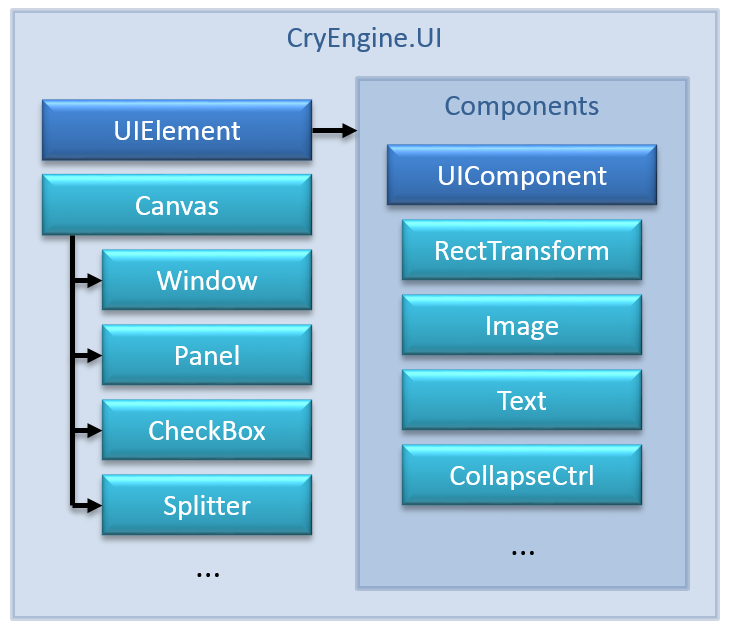

C# UI позволяет быстро создать простой UI без использования внешних инструментов, таких как Scaleform. В настоящее время C# UI может:
- Показ текста и изображений.
- Получите пользовательский ввод.
- Рендеринг непосредственно на экране или в текстуре.
- Организуйте UI с помощью групп макетов.
Введение
UI в C# работает в основном с двумя классами. Первый класс – это UIElement-класс, который наследуется от SceneObject и добавляет поддержку RectTransform. RectTransform определяет информацию о местоположении, ориентации и размере каждого UIElement. Второй класс – это UIComponent-класс, определяющий поведение UIElement. Каждый UIElement может иметь несколько UIComponents.

Каждый UI начинается с Canvas. Canvas отвечает за отображение UI на экране или в текстуре рендеринга и делегирование событий своему дочернему элементу UIElements. Каждый UIElement должен быть ребенком Canvas. Сцена может иметь несколько Canvas экземпляры одновременно.